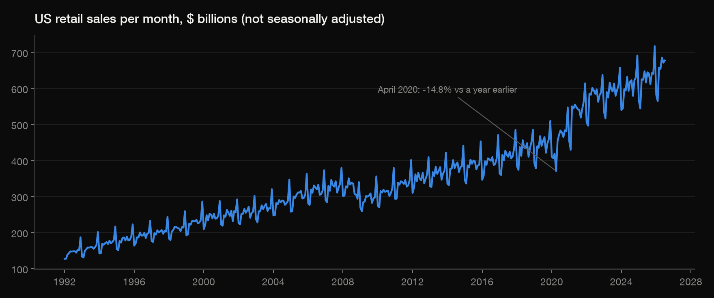
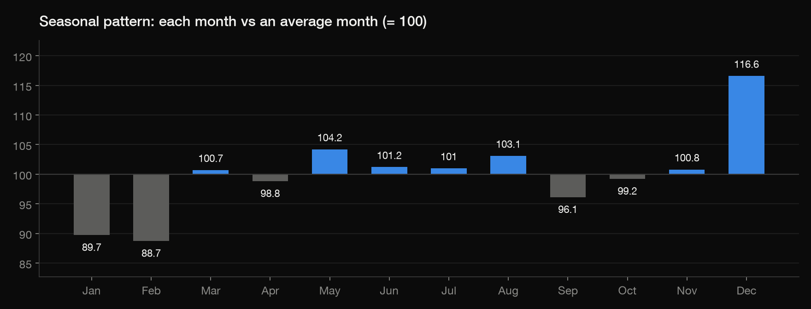
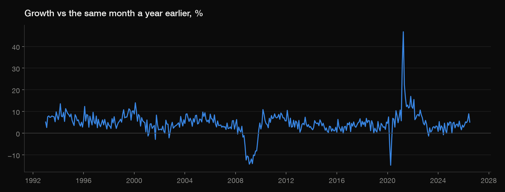
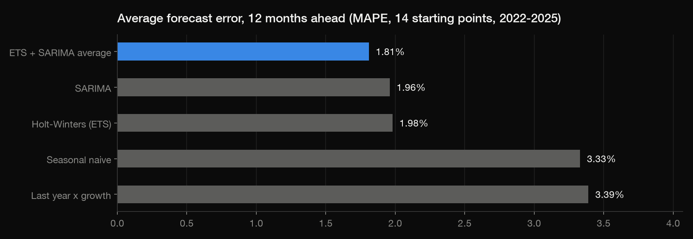
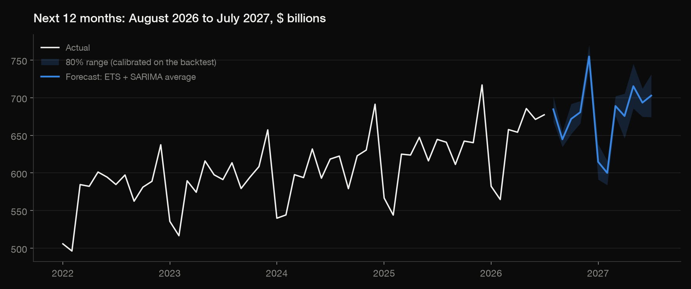

Python · Forecasting · US Census Bureau via FRED · Jan 1992 – July 2026
Where US retail sales go next
Monthly US retail sales: the trend, the calendar, a fair test of five forecasting methods on months they hadn't seen, and the next 12 months with honest ranges. Every number here comes from the scripts in this project.
1 · Thirty-four years of growth
Retail sales went from $1,756 billion in 1992 to $7,519 billion in 2025: about 4.51% a year. The one real break is the pandemic: April 2020 was -14.8% below a year earlier, and April 2021 46.8% above.

2 · The calendar does a lot of the work
December runs 16.6% above an average month and February 11.3% below (2020-21 left out so the pandemic doesn't bend the pattern). Any forecast that misses this is wrong by double digits in those months before it even starts.

| Jan | Feb | Mar | Apr | May | Jun | Jul | Aug | Sep | Oct | Nov | Dec |
|---|---|---|---|---|---|---|---|---|---|---|---|
| 89.7 | 88.7 | 100.7 | 98.8 | 104.2 | 101.2 | 101.0 | 103.1 | 96.1 | 99.2 | 100.8 | 116.6 |
3 · Growth now
July 2026: $677.2 billion, 5.1% more than a year earlier.

4 · Which method to trust: test them on months they haven't seen
Starting from 14 quarter-ends between March 2022 and mid-2025, each method saw only the history up to that point and forecast the next 12 months; those forecasts were then scored against what actually happened. Both statistical models roughly halve the error of the simple baselines, and averaging them is best: 1.81% average error (MASE 0.65, so 35% smaller errors than "same month last year").
The models' own 80% ranges held the actual value 96.43% of the time instead of 80%: they're too cautious, probably because 2020-21 sits in the training data. So the forecast below also gives a range calibrated on these real backtest errors.

| Method | MAPE % | MASE | Bias % | Forecasts | 80% range held % |
|---|---|---|---|---|---|
| ETS + SARIMA average | 1.81 | 0.65 | 0.41 | 168 | 96.43 |
| SARIMA | 1.96 | 0.70 | 1.18 | 168 | 95.83 |
| Holt-Winters (ETS) | 1.98 | 0.72 | -0.36 | 168 | 95.83 |
| Seasonal naive | 3.33 | 1.20 | -3.23 | 168 | – |
| Last year x growth | 3.39 | 1.19 | 2.05 | 168 | – |
Average error by months ahead (MAPE %):
| Months ahead | ETS + SARIMA average | Holt-Winters (ETS) | Last year x growth | SARIMA | Seasonal naive |
|---|---|---|---|---|---|
| 1 | 1.67 | 1.65 | 2.86 | 1.72 | 4.10 |
| 2 | 1.01 | 1.18 | 2.26 | 1.01 | 3.69 |
| 3 | 1.96 | 1.94 | 3.10 | 2.07 | 3.37 |
| 4 | 1.47 | 1.68 | 3.30 | 1.37 | 3.85 |
| 5 | 1.09 | 1.40 | 2.55 | 1.18 | 3.25 |
| 6 | 2.44 | 2.47 | 3.61 | 2.48 | 3.06 |
| 7 | 1.61 | 1.92 | 3.72 | 1.61 | 3.52 |
| 8 | 1.40 | 1.79 | 2.93 | 1.58 | 2.83 |
| 9 | 2.67 | 2.60 | 4.30 | 2.99 | 2.85 |
| 10 | 2.09 | 2.52 | 4.03 | 2.08 | 3.37 |
| 11 | 1.66 | 1.99 | 3.15 | 2.11 | 2.91 |
| 12 | 2.59 | 2.58 | 4.87 | 3.27 | 3.18 |
5 · The next 12 months
ETS + SARIMA average: $8,127 billion from August 2026 to July 2027, 4.9% more than the previous 12 months ($7,744 billion). December 2026 is the peak at $754.7 billion.

| Month | Forecast $bn | Calibrated 80% low | Calibrated 80% high | Model 80% low | Model 80% high |
|---|---|---|---|---|---|
| Aug 2026 | 684.6 | 668.1 | 701.0 | 662.6 | 705.8 |
| Sep 2026 | 644.7 | 634.6 | 654.7 | 621.6 | 667.9 |
| Oct 2026 | 671.8 | 651.8 | 691.8 | 646.6 | 698.1 |
| Nov 2026 | 680.7 | 665.8 | 695.5 | 652.9 | 709.5 |
| Dec 2026 | 754.7 | 739.2 | 770.2 | 721.2 | 788.0 |
| Jan 2027 | 614.7 | 591.3 | 638.1 | 585.1 | 643.9 |
| Feb 2027 | 600.0 | 583.8 | 616.1 | 570.2 | 630.6 |
| Mar 2027 | 688.9 | 675.8 | 702.1 | 653.3 | 726.7 |
| Apr 2027 | 675.6 | 645.9 | 705.4 | 639.5 | 713.5 |
| May 2027 | 715.3 | 685.6 | 744.9 | 675.4 | 756.9 |
| Jun 2027 | 693.4 | 674.7 | 712.2 | 652.5 | 736.6 |
| Jul 2027 | 702.7 | 674.2 | 731.3 | 659.6 | 748.0 |
What this can't tell you
- Nominal dollars: part of the growth is inflation, not more stuff sold.
- The Census Bureau revises recent months; a re-download can move the last few values and the forecast.
- A model built on the past can't see a new shock coming (a recession, tariffs, a pandemic).